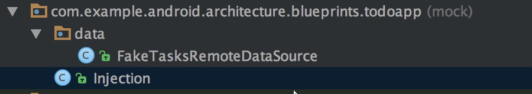
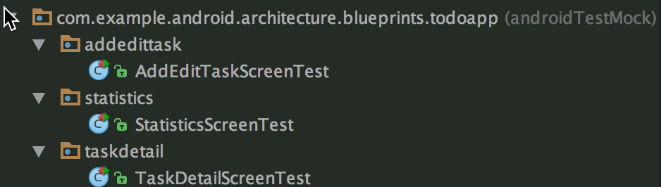
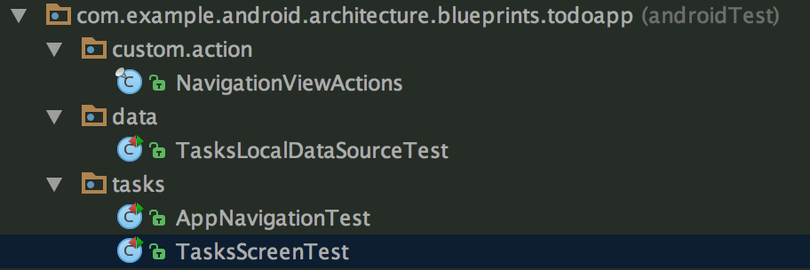

Android 测试 （四）-- 实战分析
本文通过分析一个完整的项目，来学习如果对一个完整的工程比较好的进行编写测试程序
项目地址 ，该项目采用的是 mvp 架构，（关于 mvp 的介绍可以看这里 ），mvp 对于测试的好处就是讲 view 逻辑和业务代码分离，我们可以很方便的对业务代码进行 local unit test 的测试。

项目结构
可以看到项目的整体结构比较清晰
- 项目代码
- Android 测试（Instrumentation test）
- Android 测试 相关 mock
- local unit test
- local unit test 相关 mock
local unit test mock

项目的 model 层采用的是 Repository 模式，在 mock 文件夹中，mock 测试中需要使用的数据源，并提供了注入的接口，这里采用的是手动注入，在后续依赖比较复杂的情况下可以使用 dagger 注入，减少大量冗余代码。
下面看下 mock 的数据源的实现
public class FakeTasksRemoteDataSource implements TasksDataSource {
private static FakeTasksRemoteDataSource INSTANCE;
private static final Map<String, Task> TASKS_SERVICE_DATA = new LinkedHashMap<>();
// Prevent direct instantiation.
private FakeTasksRemoteDataSource() {}
public static FakeTasksRemoteDataSource getInstance() {
if (INSTANCE == null) {
INSTANCE = new FakeTasksRemoteDataSource();
}
return INSTANCE;
}
@Override
public void getTasks(@NonNull LoadTasksCallback callback) {
callback.onTasksLoaded(Lists.newArrayList(TASKS_SERVICE_DATA.values()));
}
@Override
public void getTask(@NonNull String taskId, @NonNull GetTaskCallback callback) {
Task task = TASKS_SERVICE_DATA.get(taskId);
callback.onTaskLoaded(task);
}
@Override
public void saveTask(@NonNull Task task) {
TASKS_SERVICE_DATA.put(task.getId(), task);
}
@Override
public void completeTask(@NonNull Task task) {
Task completedTask = new Task(task.getTitle(), task.getDescription(), task.getId(), true);
TASKS_SERVICE_DATA.put(task.getId(), completedTask);
}
@Override
public void completeTask(@NonNull String taskId) {
// Not required for the remote data source.
}
@Override
public void activateTask(@NonNull Task task) {
Task activeTask = new Task(task.getTitle(), task.getDescription(), task.getId());
TASKS_SERVICE_DATA.put(task.getId(), activeTask);
}
@Override
public void activateTask(@NonNull String taskId) {
// Not required for the remote data source.
}
@Override
public void clearCompletedTasks() {
Iterator<Map.Entry<String, Task>> it = TASKS_SERVICE_DATA.entrySet().iterator();
while (it.hasNext()) {
Map.Entry<String, Task> entry = it.next();
if (entry.getValue().isCompleted()) {
it.remove();
}
}
}
public void refreshTasks() {
// Not required because the {@link TasksRepository} handles the logic of refreshing the
// tasks from all the available data sources.
}
@Override
public void deleteTask(@NonNull String taskId) {
TASKS_SERVICE_DATA.remove(taskId);
}
@Override
public void deleteAllTasks() {
TASKS_SERVICE_DATA.clear();
}
@VisibleForTesting
public void addTasks(Task... tasks) {
for (Task task : tasks) {
TASKS_SERVICE_DATA.put(task.getId(), task);
}
}
}
mock 的数据线 实现了 TasksDataSource接口，将 mock 的数据都存储在了类的Map<String, Task>中
local unit test
model 层测试
使用了 mockito 来 mock 数据，
再看测试代码之前 先回顾下TasksRepository里面逻辑，方法比较多，挑几个来分析一下
/**
* Gets tasks from local data source (sqlite) unless the table is new or empty. In that case it
* uses the network data source. This is done to simplify the sample.
* <p>
* Note: {@link LoadTasksCallback#onDataNotAvailable()} is fired if both data sources fail to
* get the data.
*/
@Override
public void getTask(@NonNull final String taskId, @NonNull final GetTaskCallback callback) {
checkNotNull(taskId);
checkNotNull(callback);
Task cachedTask = getTaskWithId(taskId);
// Respond immediately with cache if available
//如果缓存中有数据的话从缓存中获取数据
if (cachedTask != null) {
callback.onTaskLoaded(cachedTask);
return;
}
// Load from server/persisted if needed.
//缓存没有数据则从服务端获取
// Is the task in the local data source? If not, query the network.
mTasksLocalDataSource.getTask(taskId, new GetTaskCallback() {
@Override
public void onTaskLoaded(Task task) {
callback.onTaskLoaded(task);
}
@Override
public void onDataNotAvailable() {
//本地没有数据再从服务端获取
mTasksRemoteDataSource.getTask(taskId, new GetTaskCallback() {
@Override
public void onTaskLoaded(Task task) {
callback.onTaskLoaded(task);
}
@Override
public void onDataNotAvailable() {
callback.onDataNotAvailable();
}
});
}
});
}
@Override
public void saveTask(@NonNull Task task) {
checkNotNull(task);
//将数据 储存的本地 和服务端
mTasksRemoteDataSource.saveTask(task);
mTasksLocalDataSource.saveTask(task);
// Do in memory cache update to keep the app UI up to date
//将数据存储在缓存中
if (mCachedTasks == null) {
mCachedTasks = new LinkedHashMap<>();
}
mCachedTasks.put(task.getId(), task);
}
由此可以看出，数据的存储分为三层，缓存，本地存储，服务端存储。优先级递减
接着看 modle 的测试代码。
/**
* Unit tests for the implementation of the in-memory repository with cache.
*/
public class TasksRepositoryTest {
private final static String TASK_TITLE = "title";
private final static String TASK_TITLE2 = "title2";
private final static String TASK_TITLE3 = "title3";
private static List<Task> TASKS = Lists.newArrayList(new Task("Title1", "Description1"),
new Task("Title2", "Description2"));
private TasksRepository mTasksRepository;
@Mock
private TasksDataSource mTasksRemoteDataSource;
@Mock
private TasksDataSource mTasksLocalDataSource;
@Mock
private Context mContext;
@Mock
private TasksDataSource.GetTaskCallback mGetTaskCallback;
@Mock
private TasksDataSource.LoadTasksCallback mLoadTasksCallback;
/**
* {@link ArgumentCaptor} is a powerful Mockito API to capture argument values and use them to
* perform further actions or assertions on them.
*/
@Captor
private ArgumentCaptor<TasksDataSource.LoadTasksCallback> mTasksCallbackCaptor;
/**
* {@link ArgumentCaptor} is a powerful Mockito API to capture argument values and use them to
* perform further actions or assertions on them.
*/
@Captor
private ArgumentCaptor<TasksDataSource.GetTaskCallback> mTaskCallbackCaptor;
@Before
public void setupTasksRepository() {
// Mockito has a very convenient way to inject mocks by using the @Mock annotation. To
// inject the mocks in the test the initMocks method needs to be called.
MockitoAnnotations.initMocks(this);
//首先在 @Before 中创建出Repository，可以看到在TasksRepository.getInstance 中的两个参数也都是 mock 出的
// Get a reference to the class under test
mTasksRepository = TasksRepository.getInstance(
mTasksRemoteDataSource, mTasksLocalDataSource);
}
@After
public void destroyRepositoryInstance() {
//销毁创建出的实例
TasksRepository.destroyInstance();
}
@Test
public void getTasks_repositoryCachesAfterFirstApiCall() {
// Given a setup Captor to capture callbacks
// When two calls are issued to the tasks repository
// 使用 mLoadTasksCallback 来记录 callback
twoTasksLoadCallsToRepository(mLoadTasksCallback);
// Then tasks were only requested once from Service API
//第一次调用 gettask 时本地是没有缓存的，所以 verify调用了mTasksRemoteDataSource 的 getTasks，并且其中的参数是 TasksDataSource.LoadTasksCallback.class类型，在第二次调用中，本地已经数据已经有了，所以mTasksRemoteDataSource 的方法只调用了一次
verify(mTasksRemoteDataSource).getTasks(any(TasksDataSource.LoadTasksCallback.class));
}
@Test
public void getTasks_requestsAllTasksFromLocalDataSource() {
// When tasks are requested from the tasks repository
mTasksRepository.getTasks(mLoadTasksCallback);
// Then tasks are loaded from the local data source
verify(mTasksLocalDataSource).getTasks(any(TasksDataSource.LoadTasksCallback.class));
}
@Test
public void saveTask_savesTaskToServiceAPI() {
// Given a stub task with title and description
Task newTask = new Task(TASK_TITLE, "Some Task Description");
// When a task is saved to the tasks repository
mTasksRepository.saveTask(newTask);
// Then the service API and persistent repository are called and the cache is updated
//save 时 ，本地和服务端都调用了saveTask，并且本地的缓存 list 会增加
verify(mTasksRemoteDataSource).saveTask(newTask);
verify(mTasksLocalDataSource).saveTask(newTask);
assertThat(mTasksRepository.mCachedTasks.size(), is(1));
}
@Test
public void getTask_requestsSingleTaskFromLocalDataSource() {
// When a task is requested from the tasks repository
mTasksRepository.getTask(TASK_TITLE, mGetTaskCallback);
// Then the task is loaded from the database
verify(mTasksLocalDataSource).getTask(eq(TASK_TITLE), any(
TasksDataSource.GetTaskCallback.class));
}
@Test
public void getTasksWithDirtyCache_tasksAreRetrievedFromRemote() {
// When calling getTasks in the repository with dirty cache
mTasksRepository.refreshTasks();
mTasksRepository.getTasks(mLoadTasksCallback);
// And the remote data source has data available
setTasksAvailable(mTasksRemoteDataSource, TASKS);
// Verify the tasks from the remote data source are returned, not the local
verify(mTasksLocalDataSource, never()).getTasks(mLoadTasksCallback);
verify(mLoadTasksCallback).onTasksLoaded(TASKS);
}
@Test
public void getTasksWithLocalDataSourceUnavailable_tasksAreRetrievedFromRemote() {
// When calling getTasks in the repository
mTasksRepository.getTasks(mLoadTasksCallback);
// And the local data source has no data available
setTasksNotAvailable(mTasksLocalDataSource);
// And the remote data source has data available
setTasksAvailable(mTasksRemoteDataSource, TASKS);
// Verify the tasks from the local data source are returned
verify(mLoadTasksCallback).onTasksLoaded(TASKS);
}
@Test
public void getTasksWithBothDataSourcesUnavailable_firesOnDataUnavailable() {
// When calling getTasks in the repository
mTasksRepository.getTasks(mLoadTasksCallback);
// And the local data source has no data available
setTasksNotAvailable(mTasksLocalDataSource);
// And the remote data source has no data available
setTasksNotAvailable(mTasksRemoteDataSource);
// Verify no data is returned
verify(mLoadTasksCallback).onDataNotAvailable();
}
/**
* Convenience method that issues two calls to the tasks repository
*/
private void twoTasksLoadCallsToRepository(TasksDataSource.LoadTasksCallback callback) {
// When tasks are requested from repository
mTasksRepository.getTasks(callback); // First call to API
// Use the Mockito Captor to capture the callback
// 由于是第一次调用 mTasksRepository.getTasks ，所以会先调用 mTasksLocalDataSource,并且用mTasksCallbackCaptor.capture 记录 callback
verify(mTasksLocalDataSource).getTasks(mTasksCallbackCaptor.capture());
// Local data source doesn't have data yet
//由于第一次调用 get,所以本地数据是空的，会调用onDataNotAvailable 的回调
mTasksCallbackCaptor.getValue().onDataNotAvailable();
// Verify the remote data source is queried
//本地为空，onDataNotAvailable回调中会调用，mTasksRemoteDataSource.getTasks
verify(mTasksRemoteDataSource).getTasks(mTasksCallbackCaptor.capture());
// Trigger callback so tasks are cached
//加载完 task 的回调
mTasksCallbackCaptor.getValue().onTasksLoaded(TASKS);
//第二次调用
mTasksRepository.getTasks(callback); // Second call to API
}
private void setTasksNotAvailable(TasksDataSource dataSource) {
verify(dataSource).getTasks(mTasksCallbackCaptor.capture());
mTasksCallbackCaptor.getValue().onDataNotAvailable();
}
private void setTasksAvailable(TasksDataSource dataSource, List<Task> tasks) {
verify(dataSource).getTasks(mTasksCallbackCaptor.capture());
mTasksCallbackCaptor.getValue().onTasksLoaded(tasks);
}
private void setTaskNotAvailable(TasksDataSource dataSource, String taskId) {
verify(dataSource).getTask(eq(taskId), mTaskCallbackCaptor.capture());
mTaskCallbackCaptor.getValue().onDataNotAvailable();
}
private void setTaskAvailable(TasksDataSource dataSource, Task task) {
verify(dataSource).getTask(eq(task.getId()), mTaskCallbackCaptor.capture());
mTaskCallbackCaptor.getValue().onTaskLoaded(task);
}
}
P层测试
选择AddEditTaskPresenter的测试来分析，这事增加 task 的业务
/**
* Unit tests for the implementation of {@link AddEditTaskPresenter}.
*/
public class AddEditTaskPresenterTest {
@Mock
private TasksRepository mTasksRepository;
@Mock
private AddEditTaskContract.View mAddEditTaskView;
/**
* {@link ArgumentCaptor} is a powerful Mockito API to capture argument values and use them to
* perform further actions or assertions on them.
*/
@Captor
private ArgumentCaptor<TasksDataSource.GetTaskCallback> mGetTaskCallbackCaptor;
private AddEditTaskPresenter mAddEditTaskPresenter;
@Before
public void setupMocksAndView() {
// Mockito has a very convenient way to inject mocks by using the @Mock annotation. To
// inject the mocks in the test the initMocks method needs to be called.
MockitoAnnotations.initMocks(this);
// The presenter wont't update the view unless it's active.
when(mAddEditTaskView.isActive()).thenReturn(true);
}
@Test
public void saveNewTaskToRepository_showsSuccessMessageUi() {
// Get a reference to the class under test
//手动构造出AddEditTaskPresente r
mAddEditTaskPresenter = new AddEditTaskPresenter("1", mTasksRepository, mAddEditTaskView);
// When the presenter is asked to save a task
mAddEditTaskPresenter.saveTask("New Task Title", "Some Task Description");
// Then a task is saved in the repository and the view updated
//确认调用了 mTasksRepository 的 saveTask 方法
verify(mTasksRepository).saveTask(any(Task.class)); // saved to the model
//确认 UI 对应的结构得到调用，具体效果不在这里的单元测试验证，在 UI 验证
verify(mAddEditTaskView).showTasksList(); // shown in the UI
}
@Test
public void saveTask_emptyTaskShowsErrorUi() {
// Get a reference to the class under test
mAddEditTaskPresenter = new AddEditTaskPresenter(null, mTasksRepository, mAddEditTaskView);
// When the presenter is asked to save an empty task
mAddEditTaskPresenter.saveTask("", "");
// Then an empty not error is shown in the UI
verify(mAddEditTaskView).showEmptyTaskError();
}
@Test
public void saveExistingTaskToRepository_showsSuccessMessageUi() {
// Get a reference to the class under test
mAddEditTaskPresenter = new AddEditTaskPresenter("1", mTasksRepository, mAddEditTaskView);
// When the presenter is asked to save an existing task
mAddEditTaskPresenter.saveTask("New Task Title", "Some Task Description");
// Then a task is saved in the repository and the view updated
verify(mTasksRepository).saveTask(any(Task.class)); // saved to the model
verify(mAddEditTaskView).showTasksList(); // shown in the UI
}
@Test
public void populateTask_callsRepoAndUpdatesView() {
Task testTask = new Task("TITLE", "DESCRIPTION");
// Get a reference to the class under test
mAddEditTaskPresenter = new AddEditTaskPresenter(testTask.getId(),
mTasksRepository, mAddEditTaskView);
// When the presenter is asked to populate an existing task
mAddEditTaskPresenter.populateTask();
// Then the task repository is queried and the view updated
verify(mTasksRepository).getTask(eq(testTask.getId()), mGetTaskCallbackCaptor.capture());
// Simulate callback
mGetTaskCallbackCaptor.getValue().onTaskLoaded(testTask);
verify(mAddEditTaskView).setTitle(testTask.getTitle());
verify(mAddEditTaskView).setDescription(testTask.getDescription());
}
}
android mock test

/**
* Tests for the statistics screen.
*/
@RunWith(AndroidJUnit4.class)
@LargeTest
public class StatisticsScreenTest {
/**
* {@link ActivityTestRule} is a JUnit {@link Rule @Rule} to launch your activity under test.
*
* <p>
* Rules are interceptors which are executed for each test method and are important building
* blocks of Junit tests.
*/
@Rule
public ActivityTestRule<StatisticsActivity> mStatisticsActivityTestRule =
new ActivityTestRule<>(StatisticsActivity.class, true, false);
/**
* Setup your test fixture with a fake task id. The {@link TaskDetailActivity} is started with
* a particular task id, which is then loaded from the service API.
*
* <p>
* Note that this test runs hermetically and is fully isolated using a fake implementation of
* the service API. This is a great way to make your tests more reliable and faster at the same
* time, since they are isolated from any outside dependencies.
*/
@Before
public void intentWithStubbedTaskId() {
// Given some tasks
TasksRepository.destroyInstance();
//做了两个 mock 数据，一个已完成 一个未完成
FakeTasksRemoteDataSource.getInstance().addTasks(new Task("Title1", "", false));
FakeTasksRemoteDataSource.getInstance().addTasks(new Task("Title2", "", true));
// Lazily start the Activity from the ActivityTestRule
Intent startIntent = new Intent();
mStatisticsActivityTestRule.launchActivity(startIntent);
}
@Test
public void Tasks_ShowsNonEmptyMessage() throws Exception {
// Check that the active and completed tasks text is displayed
//检测这两种 view 是不是都显示了
String expectedActiveTaskText = InstrumentationRegistry.getTargetContext()
.getString(R.string.statistics_active_tasks);
onView(withText(containsString(expectedActiveTaskText))).check(matches(isDisplayed()));
String expectedCompletedTaskText = InstrumentationRegistry.getTargetContext()
.getString(R.string.statistics_completed_tasks);
onView(withText(containsString(expectedCompletedTaskText))).check(matches(isDisplayed()));
}
}
Android test
模拟人工点击，并检测响应的页面显示，选择增加 task 的例子来分析
/**
* Tests for the tasks screen, the main screen which contains a list of all tasks.
*/
@RunWith(AndroidJUnit4.class)
@LargeTest
public class TasksScreenTest {
private final static String TITLE1 = "TITLE1";
private final static String DESCRIPTION = "DESCR";
private final static String TITLE2 = "TITLE2";
/**
* {@link ActivityTestRule} is a JUnit {@link Rule @Rule} to launch your activity under test.
* <p>
* Rules are interceptors which are executed for each test method and are important building
* blocks of Junit tests.
*/
@Rule
public ActivityTestRule<TasksActivity> mTasksActivityTestRule =
new ActivityTestRule<TasksActivity>(TasksActivity.class) {
/**
* To avoid a long list of tasks and the need to scroll through the list to find a
* task, we call {@link TasksDataSource#deleteAllTasks()} before each test.
*/
@Override
protected void beforeActivityLaunched() {
super.beforeActivityLaunched();
// Doing this in @Before generates a race condition.
//先删除所有 task
Injection.provideTasksRepository(InstrumentationRegistry.getTargetContext())
.deleteAllTasks();
}
};
}
//检测增加一个 task 到 list
@Test
public void addTaskToTasksList() throws Exception {
createTask(TITLE1, DESCRIPTION);
// Verify task is displayed on screen
onView(withItemText(TITLE1)).check(matches(isDisplayed()));
}
//增加数据的操作都是点击并模拟输入的，不是 mock 的数据
private void createTask(String title, String description) {
// Click on the add task button
onView(withId(R.id.fab_add_task)).perform(click());
// Add task title and description
onView(withId(R.id.add_task_title)).perform(typeText(title),
closeSoftKeyboard()); // Type new task title
onView(withId(R.id.add_task_description)).perform(typeText(description),
closeSoftKeyboard()); // Type new task description and close the keyboard
// Save the task
onView(withId(R.id.fab_edit_task_done)).perform(click());
}
测试系列博客目录
- Android 测试 （一）--测试总览 http://xuyushi.github.io/2016/11/05/Android%20%E6%B5%8B%E8%AF%95%20%EF%BC%88%E4%B8%80%EF%BC%89--%E6%B5%8B%E8%AF%95%E6%80%BB%E8%A7%88/
- Android 测试 （二）--Instrumented Unit Tests http://xuyushi.github.io/2016/11/05/Android%20%E6%B5%8B%E8%AF%95%20%EF%BC%88%E4%BA%8C%EF%BC%89--Instrumented%20Unit%20Tests/
- Android 测试 （三）--Local Unit Tests http://xuyushi.github.io/2016/11/06/Android%20%E6%B5%8B%E8%AF%95%20%EF%BC%88%E4%B8%89%EF%BC%89--Local%20Unit%20Tests/
- Android 测试 （四）-- 实战分析 http://xuyushi.github.io/2016/11/13/Android%20%E6%B5%8B%E8%AF%95%20%EF%BC%88%E5%9B%9B%EF%BC%89--%20%E5%AE%9E%E6%88%98%E5%88%86%E6%9E%90/